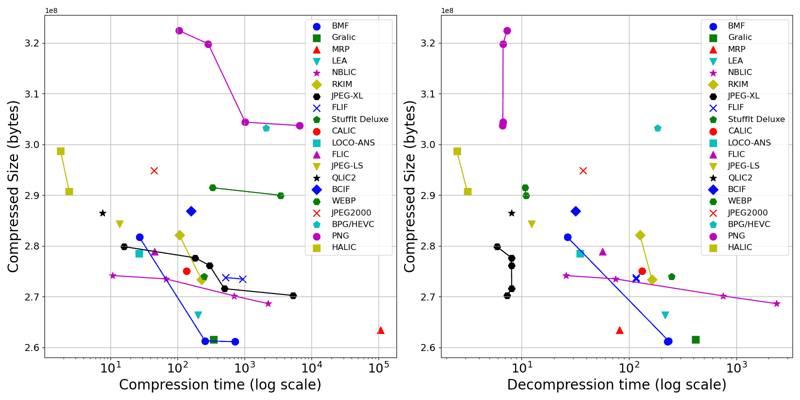

This page shows the performance of several state-of-the-art lossless image compression formats/methods when compressing 8-bit grayscale images. Related link: For 24-bit RGB lossless images compression benchmark (LPCB), see 24-bit RGB LPCB by Alex Rhatushnyak. This benchmark uses 62 uncompressed images (total 751 MB) as same as 24-bit RGB LPCB (but converted to 8-bit grayscale images). (more info about test data) To get the Python scripts to run benchmark, see github.com/WangXuan95/Gray8bit-Image-Compression-Benchmark Test Environment: Intel Core i7 12700H, 16GB DDR4 in 3200MHz, Windows 10 system. - Win_x64: compressor/decompressor executable file (.exe) is run directly. - Linux x64 (WSL): compressor/decompressor executable file is Linux binary and run in Windows subsystem for Linux (WSL). - Python Pillow: use Python 3.9 with Pillow 10.1.0 library to run compress/decompress. Note: All shown compressed results are lossless (strictly lossless!) except JPEG.
Compressed Compressed size Compression Decompression Command line Command line Test format/config bytes ratio% time, seconds time, seconds to compress to decompress Environment BMF (-s -q9) 261,105,188 34.75% 722.372 228.101 bmf.exe -s -q9 -Oout in.pgm bmf.exe -pnm -Oout in.bmf Win_x64 BMF (-s) 261,261,936 34.77% 258.793 233.820 bmf.exe -s -Oout in.pgm bmf.exe -pnm -Oout in.bmf Win_x64 Gralic 261,514,961 34.80% 346.750 415.880 gralic111d.exe c out.gralic in.ppm gralic111d.exe d in.gralic out.ppm Win_x64 MRP (-o) 262,448,355 34.93% 549043.153 80.030 ./encmrp -o in.pgm out.mrp ./decmrp in.mrp out.pgm Linux x64 (WSL) MRP 263,367,040 35.04% 106752.508 81.212 ./encmrp in.pgm out.mrp ./decmrp in.mrp out.pgm Linux x64 (WSL) LEA 266,334,080 35.44% 204.655 217.282 clea.exe in.ppm out.lea dlea.exe in.lea out.ppm Win_x64 NBLIC (-e3) 268,604,909 35.75% 2267.025 2362.916 nblic_codec.exe -c -e3 in.pgm out.nblic nblic_codec.exe -d in.nblic out.pgm Win_x64 NBLIC (-e2) 270,138,403 35.95% 703.554 746.253 nblic_codec.exe -c -e2 in.pgm out.nblic nblic_codec.exe -d in.nblic out.pgm Win_x64 JPEG-XL (-q 100 -e 9) 270,223,280 35.96% 5293.773 7.313 cjxl.exe in.pgm out.jxl -q 100 -e 9 djxl.exe in.jxl out.pgm Win_x64 JPEG-XL (-q 100 -e 7) 271,563,265 36.14% 502.579 8.078 cjxl.exe in.pgm out.jxl -q 100 -e 7 djxl.exe in.jxl out.pgm Win_x64 RKIM (cx) 273,347,598 36.38% 230.705 163.183 rkim.exe cx in.tga out.rkim rkim.exe e in.rkim out.tga Win_x64 FLIF (-E100) 273,472,210 36.39% 931.818 116.347 ./flif -e -N -E100 in.pgm out.flif ./flif -d in.flif out.pgm Linux x64 (WSL) NBLIC (-e1) 273,488,609 36.40% 67.102 74.424 nblic_codec.exe -c -e1 in.pgm out.nblic nblic_codec.exe -d in.nblic out.pgm Win_x64 FLIF (-E60) 273,740,881 36.43% 522.541 116.264 ./flif -e -N -E60 in.pgm out.flif ./flif -d in.flif out.pgm Linux x64 (WSL) StuffIt Deluxe 273,914,871 36.45% 249.972 248.159 console_stuffEN.exe /c -o --quiet -a=out in.pgm console_stuffEN.exe /x in Win_x64 NBLIC (-e0 -t) 274,203,076 36.49% 10.712 25.786 nblic_codec.exe -c -e0 -t in.pgm out.nblic nblic_codec.exe -d in.nblic out.pgm Win_x64 CALIC 275,071,904 36.61% 136.689 132.305 calic8e.exe in.raw (width) (height) 8 0 out.calic calic8d.exe in.calic out.raw Win_x64 JPEG-XL (-q 100 -e 6) 276,150,100 36.75% 301.215 8.050 cjxl.exe in.pgm out.jxl -q 100 -e 6 djxl.exe in.jxl out.pgm Win_x64 JPEG-XL (-q 100 -e 5) 277,648,911 36.95% 183.052 8.015 cjxl.exe in.pgm out.jxl -q 100 -e 5 djxl.exe in.jxl out.pgm Win_x64 LOCO-ANS 278,462,660 37.06% 26.929 34.832 ./loco_ans_codec 0 in.pgm out.locoans 0 ./loco_ans_codec 1 in.locoans out.pgm Linux x64 (WSL) FLIC 278,838,565 37.11% 45.525 56.748 flic.exe c out.flic in.ppm flic.exe d in.flic out.ppm Win_x64 JPEG-XL (-q 100 -e 3) 279,843,069 37.24% 15.978 5.885 cjxl.exe in.pgm out.jxl -q 100 -e 3 djxl.exe in.jxl out.pgm Win_x64 BMF (-q9) 281,403,408 37.45% 131.701 27.910 bmf.exe -q9 -Oout in.pgm bmf.exe -pnm -Oout in.bmf Win_x64 BMF 281,729,564 37.49% 27.015 26.590 bmf.exe -Oout in.pgm bmf.exe -pnm -Oout in.bmf Win_x64 RKIM (c) 282,088,556 37.54% 106.956 126.568 rkim.exe c in.tga out.rkim rkim.exe e in.rkim out.tga Win_x64 JPEG-LS 284,310,637 37.84% 13.719 12.316 Image.open('in.pgm').save('out.jls',spiff=None) Image.open('in.jls').save('out.pgm') Python Pillow JPEG-LS 284,310,637 37.84% 18.460 18.813 locoe.exe in.pgm -oout locod.exe in out.pgm Win_x64 QLIC2 286,469,836 38.12% 7.692 8.002 qlic2.exe c out.qlic2 in.ppm qlic2.exe d in.qlic2 out.ppm Win_x64 BCIF 286,880,232 38.17% 159.206 31.882 bcif.exe in.bmp -c out.bcif bcif.exe in.bcif -d out.bmp Win_x64 LSP 288,349,488 38.37% 22.712 26.903 lsp.exe in.pgm lsp.exe in.lsp Win_x64 WEBP (-lossless -m 6) 289,742,674 38.56% 2015.306 138.602 cwebp.exe -lossless -q 100 -m 6 in.png -o out.webp dwebp.exe in.webp -o out.pgm Win_x64 WEBP (-lossless -m 6) 289,966,290 38.59% 3460.702 10.958 Image.open('in.pgm').save('out.webp',lossless=True,quality=100,method=6) Image.open('in.webp').save('out.pgm') Python Pillow HALIC 290,744,703 38.69% 2.429 3.116 HALIC_ENCODE_V.0.7.2_ST_AVX.exe in.pgm out HALIC_DECODE_V.0.7.2_ST_AVX in out.pgm Win_x64 WEBP (-lossless -m 4) 291,422,842 38.78% 358.133 137.990 cwebp.exe -lossless -q 100 -m 4 in.png -o out.webp dwebp.exe in.webp -o out.pgm Win_x64 WEBP (-lossless -m 4) 291,450,516 38.79% 333.802 10.727 Image.open('in.pgm').save('out.webp',lossless=True,quality=100,method=4) Image.open('in.webp').save('out.pgm') Python Pillow BIM 291,820,569 38.84% 60.972 59.642 bim.exe c in.ppm out.bim bim.exe d in.bim out.ppm Win_x64 JPEG2000 294,836,093 39.24% 44.764 37.418 Image.open('in.pgm').save('out.j2k',format='JPEG2000',irreversible=False) Image.open('in.j2k').save('out.pgm') Python Pillow HALIC (FAST) 298,660,889 39.75% 1.809 2.493 HALIC_ENCODE_V.0.7.2_ST_FAST_AVX.exe in.pgm out HALIC_DECODE_V.0.7.2_ST_FAST_AVX in out.pgm Win_x64 BPG/HEVC 303,248,314 40.36% 2119.629 184.144 bpgenc.exe -lossless -e jctvc -m1 -o out.bpg in.png bpgdec.exe -o out.png in.bpg Win_x64 PNG (optipng -o7) 303,703,031 40.42% 17779.304 6.798 optipng.exe -o7 -force in.pgm -out out.png nconvert.exe -out pgm -o out.pgm in.png Win_x64 PNG (optipng -o5) 303,703,031 40.42% 6603.849 6.618 optipng.exe -o5 -force in.pgm -out out.png nconvert.exe -out pgm -o out.pgm in.png Win_x64 PNG (optipng -o2) 304,379,777 40.51% 1028.626 6.682 optipng.exe -o2 -force in.pgm -out out.png nconvert.exe -out pgm -o out.pgm in.png Win_x64 LPAQ8 (9) 309,500,383 41.19% 1177.094 923.235 lpaq8.exe 9 in.pgm out.lpaq8 lpaq8.exe d in.lpaq8 out.pgm Win_x64 PNG (pngout) 315,139,201 41.93% 4425.092 7.073 pngout.exe /c0 /f5 in.png nconvert.exe -out pgm -o out.pgm in.png Win_x64 PNG (clevel=9) 319,812,204 42.56% 288.735 6.713 nconvert.exe -out png -clevel 9 -o out.png in.pgm nconvert.exe -out pgm -o out.pgm in.png Win_x64 PNG (clevel=6) 322,413,447 42.91% 106.142 7.303 nconvert.exe -out png -clevel 6 -o out.png in.pgm nconvert.exe -out pgm -o out.pgm in.png Win_x64 JPEG (q=100 lossy!) 333,318,634 44.36% 20.951 8.625 nconvert.exe -out jpeg -q 100 -subsampling 2 -opthuff -o out.jpg in.pgm nconvert.exe -out pgm -o out.pgm in.jpg Win_x64 PNG (clevel=2) 368,803,484 49.08% 18.301 7.452 nconvert.exe -out png -clevel 2 -o out.png in.pgm nconvert.exe -out pgm -o out.pgm in.png Win_x64 XZ (-9 --extreme) 378,068,772 50.31% 422.718 36.415 xz -zk -9 --extreme in.pgm xz -dk in.pgm.xz Linux x64 (WSL) Gzip (-9) 459,102,381 61.40% 74.900 13.929 gzip -k -9 in.pgm gzip -dk in.pgm.gz Linux x64 (WSL) (uncompressed) 751,411,774 100.0%
About the compressed formats - BMF (v2.01) is a closed-sourced lossless image format by Dmitry Shkarin. The compressor/decompressor used in this test is as same as the BMF2.01 used in 24-bit RGB LPCB. - Gralic (v1.11d) is closed-sourced lossless image format by Alex Rhatushnyak. The compressor/decompressor used in this test is as same as the Gralic1.11d used in 24-bit RGB LPCB. Note: since Gralic seems to have issues when enc/dec gray 8-bit images on my computer, so I temporarily test it using this method. I've contact the author of Gralic and report this issue. - FLIC (v2.1d) and QLIC2 (v2.d) by Alex Rhatushnyak. Same as the one used in 24-bit RGB LPCB. Note: since they do not directly support gray 8-bit image, so I test them using this method. - LEA (v0.6 beta) by Marcio Pais. If their links expire, just search them in encode.su . Note: since they do not directly support gray 8-bit image, so I test them using this method. - HALIC (0.7.2) by Hakan Abbas. You can get HALIC 0.7.2 here. - NBLIC (v0.3) is a open-sourced lossless image format by Xuan Wang. The NBLIC compressor/decompressor is from github.com/WangXuan95/NBLIC-Image-Compression. - MRP (v0.5) by Ichiro Matsuda et. al. is a interesting gray 8-bit compression format. [MRP paper] It gets a high compression ratio and decodes fast, but it encodes very slow. You can get MRP v0.5 here. Note: Since MRP only supports images that can be divided by 8 in length and width, I wrote a Python program to pad the image to a multiple of 8, see github.com/WangXuan95/Gray8bit-Image-Compression-Benchmark - RKIM (v1.06) is a closed-sourced lossless image format by Malcolm Taylor. The compressor/decompressor used in this test is as same as the RKIM1.05 used in 24-bit RGB LPCB. - JPEG-XL (v0.9.0) is a standard image format that support lossless. The JPEG-XL encoder/decoder can be found here. - FLIF (v0.4) is a open-sourced lossless image format by Jon Sneyers and Pieter Wuille, which is incorporated into JPEG-XL standard. The FLIF compressor/decompressor is from github.com/FLIF-hub/FLIF. - CALIC is a lossless image compressor by Xiaolin Wu. [CALIC paper] You can get CALIC executable file in Xiaolin Wu's homepage. - LOCO-ANS is a open-sourced lossless image compressor by Tobias Alonso et al. which can be found at github.com/hpcn-uam/LOCO-ANS. - LSP is a open-sourced lossless image format, as same as the one tested in 24-bit RGB LPCB. - BCIF (v1.0 beta) by Stefano Brocchi and BIM (v0.03) by Ilya Muravyov. Same as the one used in 24-bit RGB LPCB. Note: since they do not directly support gray 8-bit image, so I test them using this method. - JPEG-LS is a standard lossless image format. Two methods are used to encode/decode WEBP: - Python 3.9.13 with Pillow 10.1.0 and pillow_jpls Library, which is based on charLS JPEG-LS C++ library. - the encoder/decoder from UBC's JPEG-LS public code. - WEBP is a standard image format. Two methods are used to encode/decode WEBP: - Python 3.9.13 with Pillow 10.1.0 Library in Win_x64. (it decodes faster!) - the executable file as same as the one used in 24-bit RGB LPCB. - PNG is a standard image format. Three methods are used to compress PNG: - Regular PNG compression using NConvert 7.163. - Optimized PNG compressor OptiPNG 0.7.7 by Cosmin Truta. - Optimized PNG compressor PNGOUT by Ken Silverman. - JPEG2000 is a standard image format. This test use Python 3.9.13 with Pillow 10.1.0 Library in Win_x64 to compress/decompress JPEG2000. - StuffIt Deluxe (tested version:13.0.0.24 (2009)) can be found at stuffit.com, which is also tested in 24-bit RGB LPCB. Note: StuffIt 2010 (v14.0.0.16) supports "--recompression-level=2" option to improve compression ratio. However, I cannot find the corresponding command-line tool (console_stuffEN.exe) in this version. Perhaps I will figure it out later. - XZ (LZMA2) and Gzip (deflate) are two famous generic data compression formats, but not specifically designed for compressing images. Here we include them just for reference. Other formats to be added in the future - AVIF lossless, and WEBP2 lossless. - PAQ8IM, PAQ8PX, and CMIX in 24-bit RGB LPCB website. Note: I haven't add them yet since their compression/decompression takes a very long time (several days).
About test data The test data set has 62 images totalling 751 MB, which is as same as the 62 images in 24-bit RGB LPCB, but has converted to gray 8-bit. To get the test data set, I followed the instructions described in this webpage and summarized it briefly as follows: First, download all the "Sample RAW Images" from the following four sites: Olympus, Sony, Fujifilm, and Canon. Note: Please find the "Sample RAW Images" section on the webpage to download, instead of the "Sample Images" section. After downloading, remove some similar images among them. On the Sony page images 12, 13, 14 were excluded as they are very similar to image 11, and for the same reason images 7, 8, 9, 10 from the Canon set, images 7, 8, 9 from the Fujifilm set. After removing, I keeps 62 images for testing, see the bottom of this webpage. Then, convert all the downloaded images to 24-bit RGB .ppm format using NConvert 7.163. The method is to run the following command in the directory where the image is located: nconvert.exe -out ppm -high_res -raw_camerabalance *.orf *.arw *.raf *.cr2 Then, convert the test data from 24-bit RGB .ppm format to 8-bit grayscale .pgm format using NConvert 7.163. The method is to run the following command in the directory where the image is located: nconvert.exe -grey 256 -out pgm *.ppm Note: .pgm is a simple uncompressed 8-bit gray image format. Many compressors support .pgm format as input. For some compressors that dont support inputting .pgm (e.g., RKIM, WEBP), I use nconvert.exe to convert .pgm to the format they directly supported. list of the 62 test images name width x height canon_eos_1100d_01 4290 x 2856 canon_eos_1100d_02 2856 x 4290 canon_eos_1100d_03 4290 x 2856 canon_eos_1100d_04 4290 x 2856 canon_eos_1100d_05 4290 x 2856 canon_eos_1100d_06 2856 x 4290 canon_eos_1100d_11 4290 x 2856 canon_eos_1100d_12 4290 x 2856 canon_eos_1100d_13 2856 x 4290 canon_eos_1100d_14 4290 x 2856 canon_eos_1100d_15 2856 x 4290 fujifilm_finepix_x100_01 4310 x 2870 fujifilm_finepix_x100_02 4310 x 2870 fujifilm_finepix_x100_03 2870 x 4310 fujifilm_finepix_x100_04 2870 x 4310 fujifilm_finepix_x100_05 2870 x 4310 fujifilm_finepix_x100_06 2870 x 4310 fujifilm_finepix_x100_10 4310 x 2870 fujifilm_finepix_x100_11 4310 x 2870 fujifilm_finepix_x100_12 4310 x 2870 fujifilm_finepix_x100_13 2870 x 4310 fujifilm_finepix_x100_14 4310 x 2870 fujifilm_finepix_x100_15 4310 x 2870 olympus_xz1_01 2760 x 3680 olympus_xz1_02 2760 x 3680 olympus_xz1_03 2760 x 3680 olympus_xz1_04 2760 x 3680 olympus_xz1_05 2760 x 3680 olympus_xz1_06 3680 x 2760 olympus_xz1_07 2760 x 3680 olympus_xz1_08 2760 x 3680 olympus_xz1_09 2760 x 3680 olympus_xz1_10 2760 x 3680 olympus_xz1_11 3680 x 2760 olympus_xz1_12 3680 x 2760 olympus_xz1_13 3680 x 2760 olympus_xz1_14 3680 x 2760 olympus_xz1_15 3680 x 2760 olympus_xz1_16 3680 x 2760 olympus_xz1_17 3680 x 2760 olympus_xz1_18 2760 x 3680 olympus_xz1_19 3680 x 2760 olympus_xz1_20 2760 x 3680 olympus_xz1_21 2760 x 3680 olympus_xz1_22 2760 x 3680 olympus_xz1_23 2760 x 3680 olympus_xz1_24 2760 x 3680 olympus_xz1_25 3680 x 2760 olympus_xz1_26 3680 x 2760 olympus_xz1_27 2760 x 3680 sony_a55_01 4928 x 3280 sony_a55_02 4928 x 3280 sony_a55_03 4928 x 3280 sony_a55_04 4928 x 3280 sony_a55_05 4928 x 3280 sony_a55_06 3280 x 4928 sony_a55_07 4928 x 3280 sony_a55_08 3280 x 4928 sony_a55_09 4928 x 3280 sony_a55_10 3280 x 4928 sony_a55_11 4928 x 3280 sony_a55_15 3280 x 4928
Appendix1: Method to test Gray8 compression using RGB888 compressors Some compressors only support RGB888 compression (including LEA, FLIC, QLIC2, BCIF, and BIM). To test them, I convert Gray8 images (.pgm) to RGB888 images (.ppm) as their input. The method is: fill the original gray 8-bit channel to the RGB888's green channel, and set the red and blue channel to all zero. I do it by a Python Script, see github.com/WangXuan95/Gray8bit-Image-Compression-Benchmark